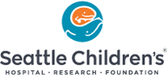
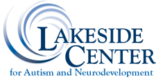
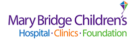
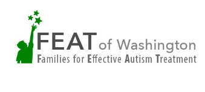
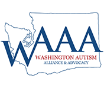

Have more questions? You're not alone. And there are dozens of resources in the greater Seattle area that you can turn to for answers and help.
|  4909 25th Ave NE, Seattle, WA 98105 Phone: (206) 987-8080 |
1701 NE Columbia Rd, Seattle, WA 98195 Phone: (206) 221-6806 |
University Of Washington - Center on Human Development and Disability 1701 NE Columbia Rd, Seattle, WA 98195 Phone: (206) 598-4317 |
|  1871 NW Gilman Blvd #2, Issaquah, WA 98027 Phone: (425) 657-0620 |
3826 S Othello St, Seattle, WA 98118 Phone: (206) 455-9845 |
2101 112th Ave. Northeast Suite 100, Bellevue, WA 98004 Phone: (425) 748-7000 |
|  311 South L St. Tacoma, WA 98405 Phone: (253) 403-4437 |
2400 NE 95th St, Seattle, WA 98115 Phone: (206) 517-0234 |
Seattle: 10740 Meridian Ave. North Suite #102, Seattle, WA 98133 Phone: (206) 466-5649 Federal Way: 33305 1st Way South Suite B203, Federal Way, WA 98003 Phone: (253) 235-5956 |
|  |  |  Autism Moms of Seattle Facebook Group |